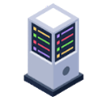

Virtualização
Virtualização: Capacidade de simular computadores dentro do sistema, permitindo a execução de múltiplos sistemas operacionais, como Windows ou Linux, em um único hardware.
Firewall
Segurança e Gestão da Rede: Possui um sistema próprio para filtrar o tráfego (o que entra e sai da rede), essencial para impedir invasões e garantir que os dados trafeguem de forma segura.
Acesso Remoto
Acesso Remoto: Permite acessar e gerenciar um computador ou equipamento através da rede, sem a necessidade de estar fisicamente na frente dele, de forma segura e eficiente.